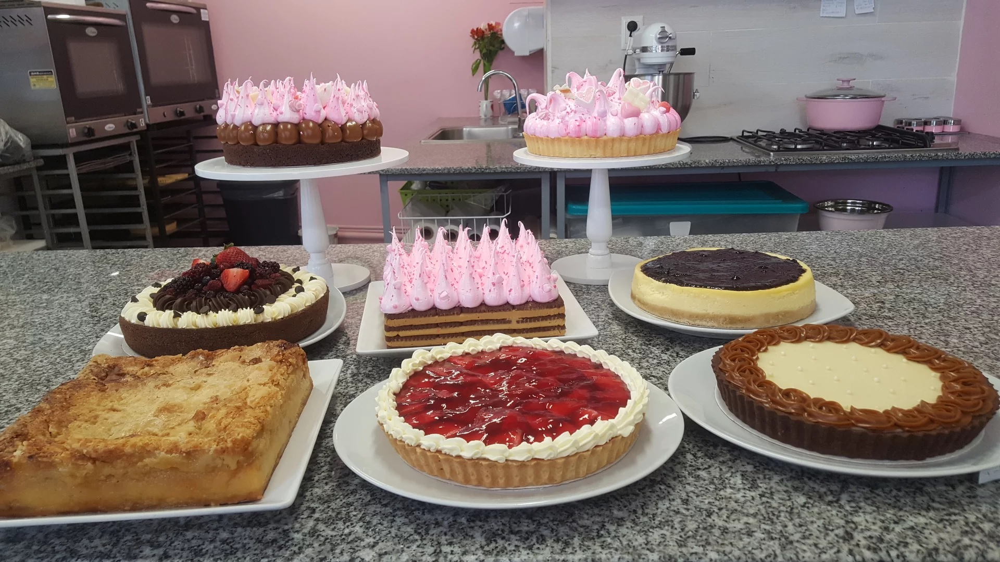

Lucy's Bakery es un emprendimiento iniciado por ex alumnos de Gato Dumas Colegio Gastronómico, inspirado en una Pastelería Artesanal contemporánea, que en un principio se especializó únicamente en tortas, pero hoy, nos estamos expandiendo a la elaboracion de Minicakes, Brownies, Alfajores, Cup Cakes, Cake Pops, Petit fours y más. Nuestro objetivo es ofrecer productos de alta calidad, excelente presentación, pero con el sabor de lo casero.
Nuestro proyecto inicio en Villa Urquiza y gracias a nuestros clientes pudimos abrir nuestra segunda sucursal en el barrio de Villa Devoto.
Esperamos que nos sigan acompañando y nos permitan continuar endulzando sus vidas.
Nosotros

Local de Villa Urquiza

Cocina